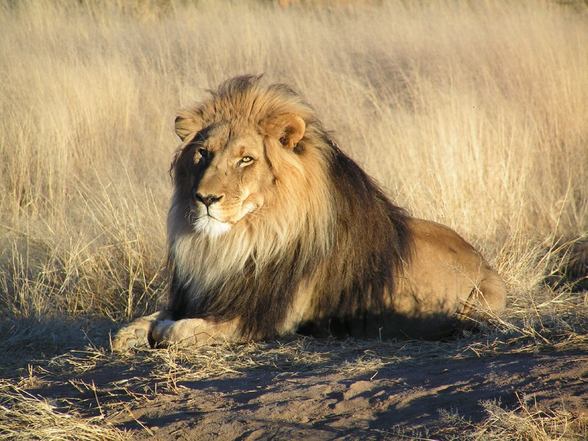
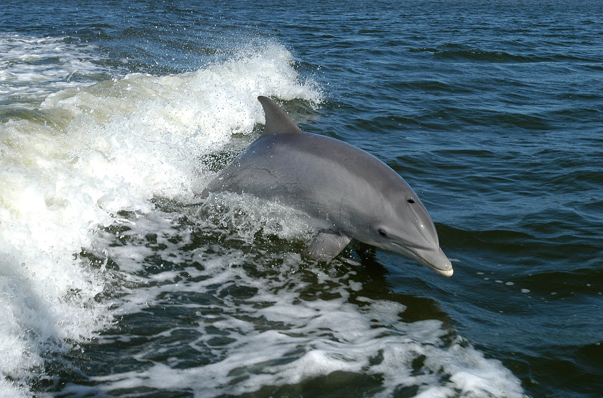

Pets I Like
Cheetah
They are the fastest land animal in the world and also they are in the cats cagatory.
Cheetas facts


Lions
The way how the lions fight. the way how the prance on the Animal with there young ones and battles to keep there familly alive.
Lion facts


Dolphins
They help people who are in need.There are fun to play with in the water
Dolphin facts


cats
They looks so cute and I also have one in my house though he is very fisty when food is coming.
Cats info


horses
I went horse beack riding once. It was amazing they are tall from my short height but they are very beautiful.
horse info